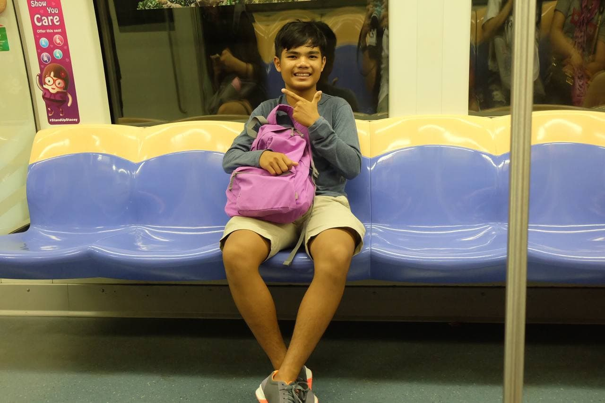
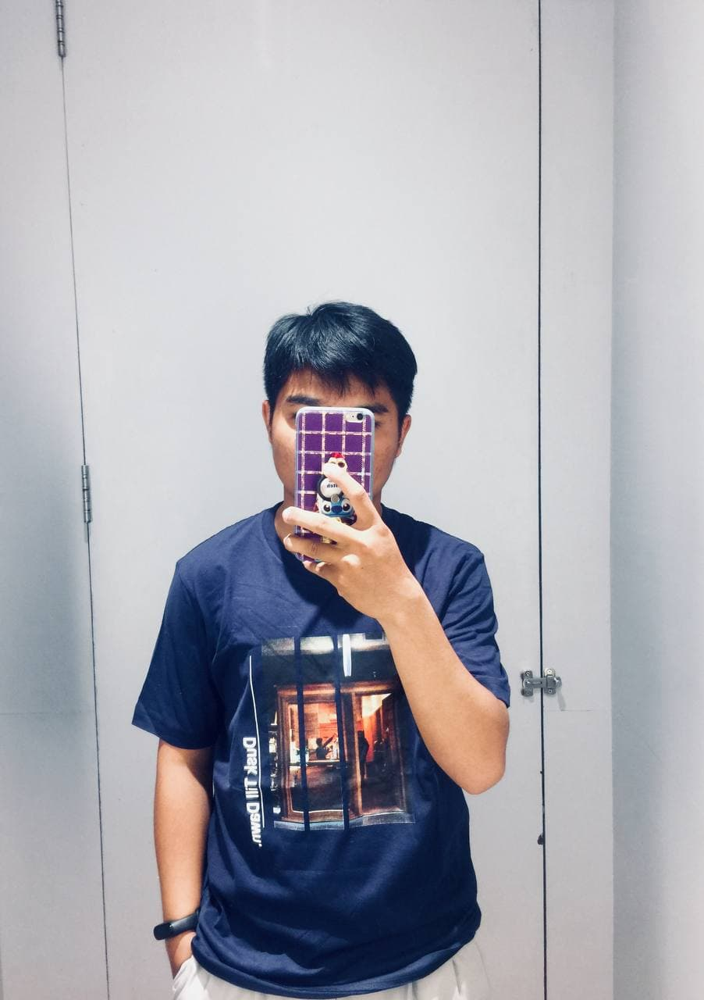
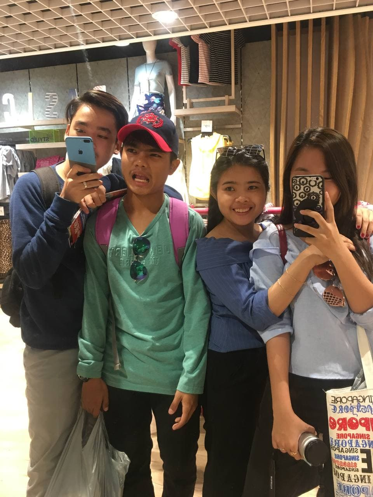
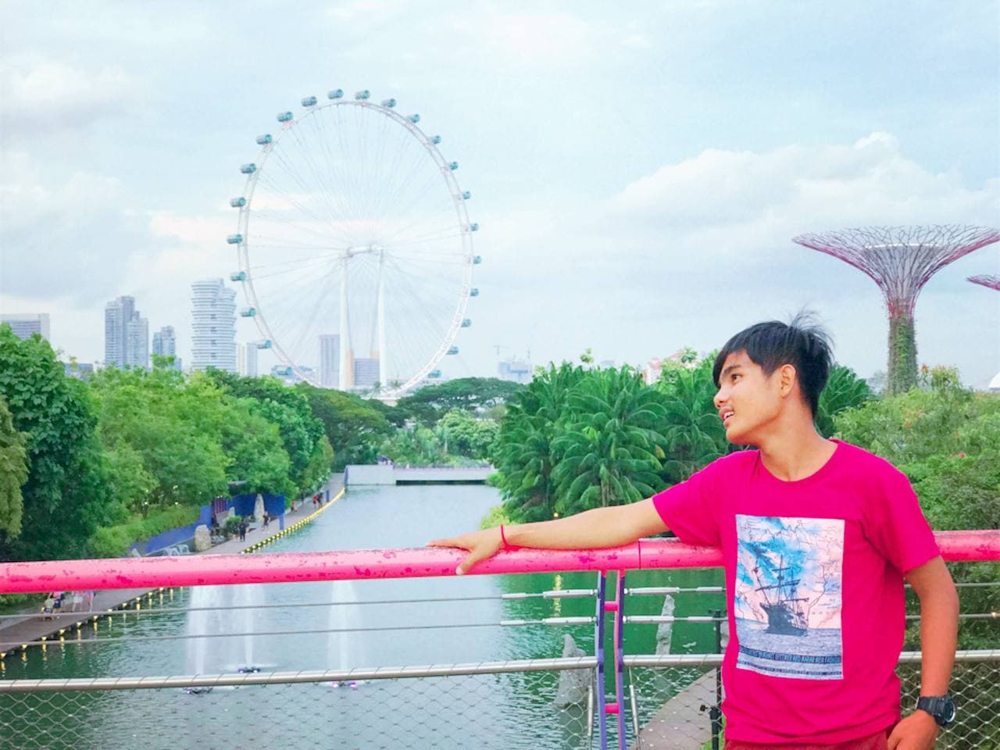

<div id="ajax-page" class="ajax-page-content">
    <div class="ajax-page-wrapper">
        <div class="ajax-page-nav">
            <div class="nav-item ajax-page-prev-next">

                <a class="ajax-page-load" href="portfolio-1.html"><i class="lnr lnr-chevron-left"></i></a>
                <a class="ajax-page-load" href="portfolio-4.html"><i class="lnr lnr-chevron-right"></i></a>
            </div>
            <div class="nav-item ajax-page-close-button">
                <a id="ajax-page-close-button" href="#"><i class="lnr lnr-cross"></i></a>
            </div>
        </div>

        <div class="ajax-page-title">
            <h1>Portfolio Project 5</h1>
        </div>

        <div class="row">
            <div class="col-sm-8 col-md-8 portfolio-block">
                <div class="owl-carousel portfolio-page-carousel">
                    <div class="item">
                        
                    </div>
                    <div class="item">
                        
                    </div>
                    <div class="item">
                        
                    </div>
                    <div class="item">
                        
                    </div>
                    <div class="item">
                        
                    </div>
                    <div class="item">
                        
                    </div>
                </div>

                <div class="portfolio-page-video embed-responsive embed-responsive-16by9">
                  <iframe class="embed-responsive-item" src="https://www.youtube.com/embed/3jXmkv-NHyY"></iframe>
                </div>

                <script type="text/javascript">
                    jQuery(document).ready(function($){
                        $('.portfolio-page-carousel').imagesLoaded(function(){
                            $('.portfolio-page-carousel').owlCarousel({
                                smartSpeed:1200,
                                items: 1,
                                loop: true,
                                dots: true,
                                nav: true,
                                navText: false,
                                margin: 10,
                                autoHeight:true
                            });
                        });
                    });
                </script>
            </div>

            <div class="col-sm-4 col-md-4 portfolio-block">
                <!-- Project Description -->
                <div class="project-description">
                    <div class="block-title">
                        <h3>Struggling will make you stronger</h3>
                    </div>
                    <ul class="project-general-info">
                        <li><p><i class="fa fa-user"></i> visothipong</p></li>
                        <li><p><i class="fa fa-globe"></i> <a href="https://www.resume.id/visothipong" target="_blank">www.visothipong.com</a></p></li>
                        <li><p><i class="fa fa-calendar"></i> 25 february, 2020</p></li>
                    </ul>

                    <p class="text-justify">“ភាពស្ងៀមស្ងាត់ នៅពេលខ្លះវាមានតម្លៃជាងពាក្យ បរិយាយរៀបរាប់ដែលមិនអាចពន្យល់ឱ្យគេយល់បាន។ ការរក្សាបាននូវការចងចាំដ៏ស្ងៀមស្ងាត់វាប្រសើរជាងការដែលមានមនុស្សស្ដាប់ឮនូវអ្វីដែលយើងប្រាប់ ប៉ុន្តែគេមិនយល់អ្វីសោះ”
ទង្វើល្អរបស់យើង មិនអាចធ្វើឱ្យមនុស្សគ្រប់គ្នារំភើបទេ វាមិនអាចមានមនុស្សគ្រប់គ្នាមករំភើប អបអរសាទរ ត្រេកអរ ជាមួយអ្វីដែលយើងធ្វើនោះទេ។ មនុស្សខ្លះ នឹងពោលសរសើរយើង ដើម្បីទទួលបានប្រយោជន៍ពីយើងទៅ។ មនុស្សខ្លះទៀត បន្តលើកទឹកចិត្តដល់យើងឱ្យខិតខំប្រឹងប្រែង គេនិយាយចេញពីបេះដូងនៃក្ដីស្រឡាញ់ពិតៗ។ មនុស្សខ្លះទៀតក៏និយាយបំបាក់ទឹកចិត្តរបស់យើង។ មានមនុស្សដែលគាំទ្រយើង ប៉ុន្តែវាមិនដូចជាការពេញចិត្ត និងជឿជាក់ចំពោះខ្លួនឯងដែលយើងអាចធ្វើបាននោះឡើយ។ មានមនុស្សដែលជឿលើយើងប៉ុន្តែវានៅតែមិនដូចជំនឿចិត្តដែលយើងត្រូវមានចំពោះខ្លួនឯង។ មានមនុស្សដែលរិះគន់យើង ប៉ុន្តែវាមិនមែនជាចុងបញ្ចប់ទេ បើយើងបោះបង់ចោលខ្លួនឯង និងមិនព្រមកែប្រែកំហុសខ្លួនឯង ទើបវាគួរឱ្យខ្លាច។
នៅលើវិថីជីវិតរបស់យើងម្នាក់ៗ មិនថាភាពរីករាយ ឬសុភមង្គលដ៏ជ្រាលជ្រៅក្នុងជម្រៅចិត្ត ដែលយើងបង្កើត បាន វាគឺជាជម្រើសនៃជីវិតរបស់យើង។ បើយើងជ្រើសរើសគិតនិងរំលឹកពីរឿងអពមង្គលដែលយើងមិនចង់បាន មិនចង់ចួប មិនចង់ដឹង នោះវាប្រាកដណាស់ យើងនឹងគ្មានថ្ងៃសប្បាយចិត្តជាមួយលទ្ធផលរបស់ខ្លួនឯងទេ។ ថ្ងៃនេះមានមនុស្សពោលសរសើរខ្ញុំដើម្បីប្រយោជន៍!មានមនុស្សនិយាយរិះគន់ព្រោះការឈឺឆ្អាលចង់ឱ្យខ្ញុំបានល្អជាងមុន! មានមនុស្សដែលរិះគន់ហើយចូលរួមជួយខ្ញុំក្នុងការកែលំអ! ប៉ុន្តែវាក៏មានមនុស្សដែលគ្មានពាក្យសរសើរ គ្មានពាក្យកែលំអ និងមានត្រឹមតែពាក្យបំបាក់ទឹកចិត្តទាំងស្រុង។
គ្រប់គ្នាគិតបែបណា វាមិនមានអ្វីត្រូវឈឺក្បាលច្រើនទេ ប៉ុន្តែយើងសម្រេចចិត្តជ្រើសរើសការគិតចំពោះរឿងណាមួយ នោះជាអ្វីដែលយើងត្រូវទទួលស្គាល់ដោយខ្លួនឯង។ ខ្ញុំមិនអាចជ្រើសរើសស្ដាប់តែពាក្យណាដែលគិតចង់ស្ដាប់ទេ ប៉ុន្តែខ្ញុំអាចជ្រើសរើសថាគួរតែចងចាំរឿងណាច្រើនជាង។ ពេលខ្លះខ្ញុំគិតថាការស្ងៀមស្ងាត់ ការមិននិយាយតបត វាជារឿងល្អបំផុតហើយ។ខ្ញុំមិនចង់មានរឿងមិនសប្បាយចិត្តច្រើនជាង១០នាទីទេ ព្រោះវាខាតពេលវេលានៃជីវិតរស់នៅរបស់ខ្ញុំ។</p>
                    <!-- /Project Description -->

                    <!-- Technology -->
                    <div class="tags-block">
                        <div class="block-title">
                            <h3>Technology</h3>
                        </div>
                        <ul class="tags">
                            <li><a>Sad</a></li>
                            <li><a>Drama</a></li>
                            <li><a>My Life</a></li>
                            <li><a>Read</a></li>
                            <li><a>Book</a></li>
                        </ul>
                    </div>
                    <!-- /Technology -->

                    <!-- Share Buttons -->
                    <div class="btn-group share-buttons">
                        <div class="block-title">
                            <h3>Share</h3>
                        </div>
                        <a href="https://www.facebook.com/profile.php?id=100007449408768" target="_blank" class="btn"><i class="fab fa-facebook-f"></i> </a>
                        <a href="https://www.instagram.com/pong_j_r_vis_/" target="_blank" class="btn"><i class="fab fa-instagram"></i> </a>
                        <a href="https://www.linkedin.com/in/visethi-pong-3333ab1aa/" target="_blank" class="btn"><i class="fab fa-linkedin-in"></i> </a>
                    </div>
                    <!-- /Share Buttons -->
                </div>
                <!-- Project Description -->
            </div>
        </div>
    </div>
</div>
